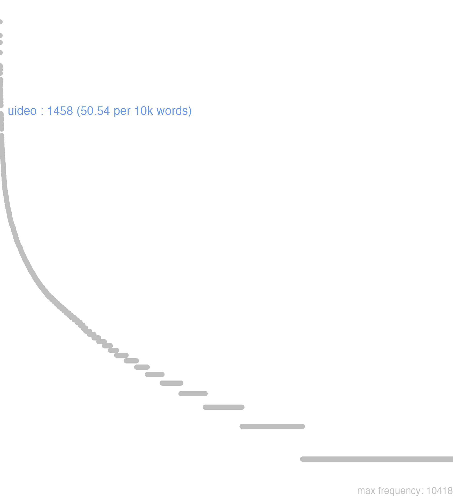

186 uideo
186.0.0.1 bases lexicais
id: http://lila-erc.eu/data/id/lemma/130163
classe: verbo
paradigma: 2ª conjugação (tema em -ē-)
outras grafias:
variantes do lema:
uideo presente | indicativo | 1ª pessoa singular | voz ativa
uidere presente | infinitivo | ativo
uidebit futuro | indicativo | 3ª pessoa singular | voz ativa
uidi pretérito perfeito | indicativo | 1ª pessoa singular | voz ativa
uisum particípio passado | nominativo neutro singular
uisurum particípio futuro | nominativo neutro singular
vĭdĕō
vidēs
vidēre
vīdi
vīsum
186.0.0.2 dicionários tradicionais
viden
= vidēsne, pres. do ind. de vidĕo.
v. tr. e intr.
Obs.: Constrói-se com acus.; como intr. absoluto; com ut ou ne com subj.; com ut e ind ou subj.; com acus. e inf.
imperat.
= vidēsne, pres. do ind. de vidĕo.
1 Vês? Vês por acaso? Cíc. Fam. 9, 22, 3; Ter. Eun. 241.
vidĕō -ēs -ēre vīdī, vīsumv. tr. e intr.
Obs.: Constrói-se com acus.; como intr. absoluto; com ut ou ne com subj.; com ut e ind ou subj.; com acus. e inf.
1 I-Sent. próprio Ver Cíc. Of. 1, 105; Cíc. Phil. 2, 63; Cíc. Verr. 4, 146; Cíc. Planc. 29; Cíc. Mil. 77.
2 I-Daí: Olhar, ir ver Cíc. Phil. 1, 9.
3 II-Por extensão: Perceber Cíc. At. 2, 2, 2; Cíc. Br. 1; Cíc. De Or. 1, 116.
4 III-Sent. figurado: Compreender, examinar, observar Cíc. Ac. 2, 40.
5 III-Daí: Verificar, encontrar Cíc. Tusc. 3, 59.
6 III-Daí: Ocupar-se de Cíc. At. 5, 1, 3.
7 III-Daí: Ver, presenciar, ter testemunha Cíc. At. 16, 11, 1.
8 III-Daí: Evitar Cíc. Of. 1, 42.
imperat.
1 Vê lá, toma cuidado Plaut. PS. 153.
vīdī
perf. de vidĕo.
Vĭdĕo -ēs vīdī vīsŭm -ērĕ
v. trans. e intrans. da raiz VID, d’onde ἰδεῖν, εἶδον.
v. trans. e intrans. da raiz VID, d’onde ἰδεῖν, εἶδον.
1 empregar a vista, servir-se dos olhos;
1 ver, avistar, descobrir;
2 olhar com respeito a um logar, estar voltado para;
3 ouvir;
3 perceber por um sentido qualquer, reconhecer, certificar-se;
4 ir vêr, visitar;
4 olhar;
5 prever;
5 ser intelligente, perspicaz, compreender;
5 Fig. ter em vista, pôr a mira, o fito em, desejar;
5 ter um sonho;
5 ver claramente;
5 ver em sonho;
5 ver pelo pensamento, notar, reparar;
6 attender, observar;
6 decidir, consultar, deliberar;
6 fazer caso de;
6 fazer por;
6 occupar-se com, prover a, cuidar de;
6 ver, examinar, perscrutar;
7 experimentar;
7 soffrer;
7 ver, presenciar, ser testemunha de;
8 parece bem, apraz.
8 unip. parece que;
8 Pass. parecer;
[EXEMPLOS]
1
pueri qui uisum processerant Sall As creanças que tinham vindo ver
sol non uidetur Varr Não se vê o sol
uidere acriter Cic Ter vista aguda, penetrante
uidere clare oculis Plaut Ver bem, ter boa vista
uideres… Virg. Hor Verias, ver-se-hia…
uides illam urbem…? Cic Ves aquella cidade…?
uidesis etiam Plaut Mas vê pois
uisum est Plaut Está visto já vi, tenho visto
uisus sum Ter Fui visto, viram-me
2
gallica rura uidet Luc Está voltado para os campos da Gallia o Apenino
3
mugire uidebis sub pedibus terram Virg Ouvirás a terra mugir debaixo dos pés
uide quam durum sit Aug Vê como é duro
uide quod oleat, quod sapiat Aug Vê que cheiro, que gosto tem
4
certon’ scis? Scio; me uide Plaut Estás bem certo?… Estou; confia em mim
illud uide, os ut sibi distorsit! Ter Repara, que carranca ele faz!
nec mihi iam patriam spes ulla uidendi Virg Eu não tinha esperança de tornar a ver a minha patria
nihil pericli est: me uide Ter Não há perigo; eu fico por isso
quin tu me uides? Cic Por que não te acostas a mim?
rogo uideas Plinium domi Plin. J Peço-te que vás ter com Plinio
septimium uide et Lænatem Cic Vae ver Septimio e Lenate
uide, tali ubi sint Plaut Vê onde estão os dados
5
id ubi uidit Liv Logo que elle deu fé d’isto
insano nemo in amore uidet Prop Ninguem vê possuido de louco amor
uates in futurum uidet Liv Os adivinhos conhecem o futuro
uidere aliquid in somnis Cic Ver alguma coisa em sonho
uidere exitum animo Cic Prever um resultado
uidere imperia immodica Liv Cobiçar um poder absoluto
uidere magnam gloriam Liv Aspirar a grande gloria
uidere plurimum Phaed Ser muito perspicaz
uidere plus Cic Ter mais previdencia
uidere somnia Cic Ter sonhos
uidere uentura Virg Prever o futuro
uidere uitia in dicente Cic Perceber os defeitos d’um orador
uidit se magno fore periculo Nep Viu que corria grande perigo
6
aliud lenius uide Ter Manda vir outro vinho melhor
antecesserat, ut nobis prandium uideret Cic Elle tinha passado adiante, afim de cuidar do nosso jantar
ipse uiderit Cic Isto é com elle, elle lá se intende
mea negotia uidebis Cic Cuidarás dos meus interesses
nauem ut habeas, uidebis Cic Tracta de procurar um navio
nunc ea uideamus quæ… Cic Vejamos, examinemos agora o que…
quam recte id faciam uiderint sapientes Cic Cumpre aos sábios decidir se eu tenho rasão n’isto
recte ego mihi uidissem Ter Eu me teria precavido
uidere aliud consilium Cic Tomar outras medidas
uidere ne… Cic Fazer por evitar que…
uidere ut… Cic Cuidar em, fazer por…
uiderint ista officia uiri boni Cic Occupem-se d’estes deveres os homens de bem
uideris, inquit; non ero tuî similis Petr Lá verás, diz elle; eu não me parecerei comtigo
uiderit Atrides; ego… Ov Diga o que quizer Atrides; eu…
uidete numquid hoc placeat Petr Vede se isto é do vosso parecer
7
abies casus uisura marinos Virg O abeto arrostará as aventuras do mar
multas uictorias ætas nostra uidit Cic Tem visto muitas victorias a nossa epocha
non uidit cuiusquam e suis funus Nep Não perdeu algum dos seus
quam ibi miseriam uidi! Ter Que miséria eu passei alli!
spero uos bona multa esse uisuros Cic Espero que vós vereis muitos acontecimentos felizes
uiderunt nondum diem Sen. tr Eu não tinha ainda vindo á luz, eu não tinha ainda nascido
utinam eum uideam diem, quum…! Cic Oxalá que eu veja o dia em que…!
8
audire uocem uisa sum… Ter Pareceu-me ouvir uma voz…
dis aliter uisum Virg Os deuses tiveram por bem outra coisa, resolveram d’outro modo
fecisse uideri pronuntiat Cic Elle declara que lhe parece ter commettido a acção formula das sentenças dos juizes, dos decretos, dos acordãos do senado
illorum beata mors uidetur… Cic A morte d’aquelles parece feliz…
mihi uisum est com infin.… Cic Resolvi que…
mihi uisum est ut Ter Resolvi que…
nisi quid aliud tibi uidebitur Cic A não ser que penses de modo differente
non mihi uidetur satis posse uirtutem ad… Cic Não me parece que a virtude seja sufficiente para…
obiurgaui senatum, ut mihi uisus sum… Cic Increpei o senado, segundo me pareceu…
qui imitamur, quos cuique uisum est… Cic Nós que imitamos aquelles que nos apraz…
quid tibi uidetur? Phaed Que te parece? Que achas?
si uidetur Cic Se parece bem
tibi si uidebitur… Cic Se achares que é bem, se quizeres, se te aprouver
ubi uisum est, discedunt Caes Retiram-se quando lhes aprouve
uidebatur Limnæam oppugnari posse Liv Parecia que Limnea podia ser levada á escala
uidere mihi uideor populum… Cic Parece-me ver o povo…
Video -es -idi -isum -ere
1 Cic. ver.
2 examinar, considerar, ponderar, reflectir.
[EXEMPLOS]
X
uide me Ter Confia-te em mim
uide quid agas Ter Vê o que fazes, repara em que te mettes
uidebis sub pedibus mugire solum Virg Sentirás soar o chaõ debaixo dos pés
uidere diem Ovid Viver
Videor -eris -isus sum -eri
Video -es
1 ver, entender, considerar, advertir, prover Activ.
2 pass. Videor, eris ser visto
3 pass. Videor, eris saepissimè significat parecer
[EXEMPLOS]
X
uiden Vedes por ventura? pro Videsne?
Video -es -di sum
1 ver
186.0.0.3 dados de corpus
![This chart plots collocate by scoreSUBST, for the headword uideo here are all the values plotted: collocate: sum; scoreSUBST: 0. collocate: ego; scoreSUBST: 0. collocate: non; scoreSUBST: 0. collocate: ne; scoreSUBST: 0. collocate: qua; scoreSUBST: 0. collocate: cum; scoreSUBST: 0. collocate: ut; scoreSUBST: 0. collocate: qui; scoreSUBST: 0. collocate: homo; scoreSUBST: 2. collocate: enim; scoreSUBST: 0. collocate: numquam; scoreSUBST: 0. collocate: nisi; scoreSUBST: 0. collocate: ubi; scoreSUBST: 0. collocate: quantus; scoreSUBST: 0. collocate: sic; scoreSUBST: 0. collocate: primum; scoreSUBST: 0. collocate: quia; scoreSUBST: 0. collocate: fugio; scoreSUBST: 0. collocate: tollo; scoreSUBST: 0. collocate: indignus; scoreSUBST: 0. collocate: mirus; scoreSUBST: 0. collocate: quanto; scoreSUBST: 0. collocate: postea; scoreSUBST: 0. collocate: contemno; scoreSUBST: 0. collocate: plerique; scoreSUBST: 0. collocate: quaeso; scoreSUBST: 0. collocate: senex2; scoreSUBST: 0. collocate: tristis; scoreSUBST: 0. collocate: dominus; scoreSUBST: 1. collocate: incredibilis; scoreSUBST: 0. collocate: commoueo; scoreSUBST: 0](./Media/wordcloud__xx117-105-100-101-111xx__BY_collocate_scoreSUBST.webp)
![This chart plots collocate by scoreADJ, for the headword uideo here are all the values plotted: collocate: sum; scoreADJ: 0. collocate: ego; scoreADJ: 0. collocate: non; scoreADJ: 0. collocate: ne; scoreADJ: 0. collocate: qua; scoreADJ: 0. collocate: cum; scoreADJ: 0. collocate: ut; scoreADJ: 0. collocate: qui; scoreADJ: 0. collocate: homo; scoreADJ: 0. collocate: enim; scoreADJ: 0. collocate: numquam; scoreADJ: 0. collocate: nisi; scoreADJ: 0. collocate: ubi; scoreADJ: 0. collocate: quantus; scoreADJ: 0. collocate: sic; scoreADJ: 0. collocate: primum; scoreADJ: 0. collocate: quia; scoreADJ: 0. collocate: fugio; scoreADJ: 0. collocate: tollo; scoreADJ: 0. collocate: indignus; scoreADJ: 2. collocate: mirus; scoreADJ: 2. collocate: quanto; scoreADJ: 0. collocate: postea; scoreADJ: 0. collocate: contemno; scoreADJ: 0. collocate: plerique; scoreADJ: 0. collocate: quaeso; scoreADJ: 0. collocate: senex2; scoreADJ: 2. collocate: tristis; scoreADJ: 2. collocate: dominus; scoreADJ: 0. collocate: incredibilis; scoreADJ: 1. collocate: commoueo; scoreADJ: 0](./Media/wordcloud__xx117-105-100-101-111xx__BY_collocate_scoreADJ.webp)
![This chart plots collocate by scoreVERBO, for the headword uideo here are all the values plotted: collocate: sum; scoreVERBO: 3. collocate: ego; scoreVERBO: 0. collocate: non; scoreVERBO: 0. collocate: ne; scoreVERBO: 0. collocate: qua; scoreVERBO: 0. collocate: cum; scoreVERBO: 0. collocate: ut; scoreVERBO: 0. collocate: qui; scoreVERBO: 0. collocate: homo; scoreVERBO: 0. collocate: enim; scoreVERBO: 0. collocate: numquam; scoreVERBO: 0. collocate: nisi; scoreVERBO: 0. collocate: ubi; scoreVERBO: 0. collocate: quantus; scoreVERBO: 0. collocate: sic; scoreVERBO: 0. collocate: primum; scoreVERBO: 0. collocate: quia; scoreVERBO: 0. collocate: fugio; scoreVERBO: 2. collocate: tollo; scoreVERBO: 1. collocate: indignus; scoreVERBO: 0. collocate: mirus; scoreVERBO: 0. collocate: quanto; scoreVERBO: 0. collocate: postea; scoreVERBO: 0. collocate: contemno; scoreVERBO: 2. collocate: plerique; scoreVERBO: 0. collocate: quaeso; scoreVERBO: 2. collocate: senex2; scoreVERBO: 0. collocate: tristis; scoreVERBO: 0. collocate: dominus; scoreVERBO: 0. collocate: incredibilis; scoreVERBO: 0. collocate: commoueo; scoreVERBO: 1](./Media/wordcloud__xx117-105-100-101-111xx__BY_collocate_scoreVERBO.webp)
![This chart plots collocate by scoreADV, for the headword uideo here are all the values plotted: collocate: sum; scoreADV: 0. collocate: ego; scoreADV: 0. collocate: non; scoreADV: 3. collocate: ne; scoreADV: 0. collocate: qua; scoreADV: 2. collocate: cum; scoreADV: 0. collocate: ut; scoreADV: 0. collocate: qui; scoreADV: 0. collocate: homo; scoreADV: 0. collocate: enim; scoreADV: 2. collocate: numquam; scoreADV: 2. collocate: nisi; scoreADV: 0. collocate: ubi; scoreADV: 2. collocate: quantus; scoreADV: 0. collocate: sic; scoreADV: 1. collocate: primum; scoreADV: 2. collocate: quia; scoreADV: 0. collocate: fugio; scoreADV: 0. collocate: tollo; scoreADV: 0. collocate: indignus; scoreADV: 0. collocate: mirus; scoreADV: 0. collocate: quanto; scoreADV: 2. collocate: postea; scoreADV: 2. collocate: contemno; scoreADV: 0. collocate: plerique; scoreADV: 0. collocate: quaeso; scoreADV: 0. collocate: senex2; scoreADV: 0. collocate: tristis; scoreADV: 0. collocate: dominus; scoreADV: 0. collocate: incredibilis; scoreADV: 0. collocate: commoueo; scoreADV: 0](./Media/wordcloud__xx117-105-100-101-111xx__BY_collocate_scoreADV.webp)
![This chart plots collocate by scoreFUNC, for the headword uideo here are all the values plotted: collocate: sum; scoreFUNC: 0. collocate: ego; scoreFUNC: 0. collocate: non; scoreFUNC: 0. collocate: ne; scoreFUNC: 20. collocate: qua; scoreFUNC: 0. collocate: cum; scoreFUNC: 20. collocate: ut; scoreFUNC: 20. collocate: qui; scoreFUNC: 0. collocate: homo; scoreFUNC: 0. collocate: enim; scoreFUNC: 0. collocate: numquam; scoreFUNC: 0. collocate: nisi; scoreFUNC: 20. collocate: ubi; scoreFUNC: 0. collocate: quantus; scoreFUNC: 0. collocate: sic; scoreFUNC: 0. collocate: primum; scoreFUNC: 0. collocate: quia; scoreFUNC: 20. collocate: fugio; scoreFUNC: 0. collocate: tollo; scoreFUNC: 0. collocate: indignus; scoreFUNC: 0. collocate: mirus; scoreFUNC: 0. collocate: quanto; scoreFUNC: 0. collocate: postea; scoreFUNC: 0. collocate: contemno; scoreFUNC: 0. collocate: plerique; scoreFUNC: 0. collocate: quaeso; scoreFUNC: 0. collocate: senex2; scoreFUNC: 0. collocate: tristis; scoreFUNC: 0. collocate: dominus; scoreFUNC: 0. collocate: incredibilis; scoreFUNC: 0. collocate: commoueo; scoreFUNC: 0](./Media/wordcloud__xx117-105-100-101-111xx__BY_collocate_scoreFUNC.webp)
![This charts plots the frequency of lemma by author_Frequencies. The Cicero subcorpus registers the highest normalized frequency, with the value of 63.6 and an absolute frequency of 1021. The Vergilius subcorpus follows, with a normalized frequency of 28.96 and an absolute frequency of 15. the subcorpus with the least normalized frequency is Suetonius with the normalized value of 0 and an absolute freqeuncy of 0. here are all the values: subcorpus: Caesar ; normalized frequency: 70 ; absolute frequency: 26.4370420726641. subcorpus: Cicero ; normalized frequency: 1021 ; absolute frequency: 63.6041962572575. subcorpus: Horatius ; normalized frequency: 25 ; absolute frequency: 22.2005150519492. subcorpus: Ovidius ; normalized frequency: 26 ; absolute frequency: 44.6122168840082. subcorpus: Phaedrus ; normalized frequency: 29 ; absolute frequency: 44.0261120388644. subcorpus: Sallustius ; normalized frequency: 33 ; absolute frequency: 30.6094054354884. subcorpus: Seneca ; normalized frequency: 206 ; absolute frequency: 38.4464642317239. subcorpus: Suetonius ; normalized frequency: 0 ; absolute frequency: 0. subcorpus: Tacitus ; normalized frequency: 5 ; absolute frequency: 17.164435290079. subcorpus: Vergilius ; normalized frequency: 15 ; absolute frequency: 28.957528957529. subcorpus: Hieronymus ; normalized frequency: 28 ; absolute frequency: 62.9072118625028](./Media/barchart__xx117-105-100-101-111xx__lemma_BY_author_Frequencies.webp)
![This charts plots the frequency of lemma by genre_Frequencies. The Prosa.epistolográfica subcorpus registers the highest normalized frequency, with the value of 71.54 and an absolute frequency of 270. The Poesia.épica subcorpus follows, with a normalized frequency of 28.96 and an absolute frequency of 15. the subcorpus with the least normalized frequency is Poesia.lírica with the normalized value of 22.71 and an absolute freqeuncy of 27. here are all the values: subcorpus: Prosa.histórica ; normalized frequency: 108 ; absolute frequency: 26.2908055210692. subcorpus: Prosa.filosófica ; normalized frequency: 300 ; absolute frequency: 49.4225795291676. subcorpus: Prosa.oratória ; normalized frequency: 622 ; absolute frequency: 59.7198352423838. subcorpus: Prosa.epistolográfica ; normalized frequency: 270 ; absolute frequency: 71.5440260738228. subcorpus: Poesia.lírica ; normalized frequency: 27 ; absolute frequency: 22.7138891225709. subcorpus: Poesia.didática ; normalized frequency: 53 ; absolute frequency: 44.9571634574603. subcorpus: Poesia.trágica ; normalized frequency: 35 ; absolute frequency: 30.4030576789437. subcorpus: Poesia.épica ; normalized frequency: 15 ; absolute frequency: 28.957528957529. subcorpus: Prosa.ficcional ; normalized frequency: 28 ; absolute frequency: 62.9072118625028](./Media/barchart__xx117-105-100-101-111xx__lemma_BY_genre_Frequencies.webp)
![This charts plots the frequency of lemma by period_Frequencies. The IV.d.C. subcorpus registers the highest normalized frequency, with the value of 62.91 and an absolute frequency of 28. The I.a.C. subcorpus follows, with a normalized frequency of 54.27 and an absolute frequency of 1166. the subcorpus with the least normalized frequency is II.d.C. with the normalized value of 13.09 and an absolute freqeuncy of 5. here are all the values: subcorpus: I.a.C. ; normalized frequency: 1166 ; absolute frequency: 54.2704212241098. subcorpus: I.d.C. ; normalized frequency: 259 ; absolute frequency: 39.6206210800061. subcorpus: II.d.C. ; normalized frequency: 5 ; absolute frequency: 13.0890052356021. subcorpus: IV.d.C. ; normalized frequency: 28 ; absolute frequency: 62.9072118625028](./Media/barchart__xx117-105-100-101-111xx__lemma_BY_period_Frequencies.webp)
miram securitatem videbis
Cic.Att.4.18.2
verás uma tranquilidade admirável. [JDD]
vides enim cetera
Cic.Att.2.3.2
tu vês o restante. [JDD]
numquam sic vidimus
Vulg.Marc.2.12
Nunca vimos nada assim. [JDD]
ut scribis ita video
Cic.Att.2.15.1
Vejo, como tu me escreves. [JDD]
uidetis quam nefaria uox
Cic.Amici.37
Vedes que palavras abomináveis! [JDD]
non vidisti igitur hominem
Cic.Att.5.2.2
“Não viste então o homem?” [JDD, de outra edição]
video hominem valde petiturire
Cic.Att.1.14.7
Vejo que o homem vai se lançar com força como candidado. [JDD]
videbis ergo hominem si voles
Cic.Att.4.12.1
Portanto, verás o homem, se quiseres. [JDD]
Drusus Scaurus non fecisse videntur
Cic.Att.4.17.5
Druso e Escauro parecem não ter cometido nada. [JDD]
nimis urgeo commoueri uidetur adulescens
Cic.Lig.9
Estou apertando demais; o jovem parece estar se emocionando. [JDD]
vix enim mihi exaudisse videor
Cic.Att.4.8A.1
pois tenho a impressão de mal ter ouvido. [JDD]
vide quae sint postea consecuta
Cic.Att.1.18.3
Vê quais são as consequências depois disso. [JDD]
nam Phaetho libertus eum non vidit
Cic.Att.3.8.2
De fato, o liberto Fetão não o viu. [JDD]
eum quia non videbam abesse putabam
Cic.Att.4.8A.3
Eu, porque não o via, achava que ele estava ausente. [JDD]
senatum frequentem celeriter ut uidistis coegi
Cic.Catil.3.7.11
Reuni rapidamente um senado numeroso, como vistes. [JDD]
Honorem fructu ne videamur vendere .
Phaed.3.17
“Para que não pareçamos vender nossa honra pelo fruto”. [JDD]
hoc mihi eius modi non videbatur
Cic.Att.2.16.1
Isto não me parecia deste modo. [JDD]
omnibus acerbum indignum luctuosum denique uidebatur
Cic.Ver.2.4.99.13
A todos parecia penoso, indigno, lastimável enfim. [JDD]
cuperem vultum videre tuum cum haec legeres
Cic.Att.4.17.4
Eu desejaria ver tua cara quando lesses estas coisas. [JDD]
mirum illi uideri mittit iterum non redditur
Cic.Ver.2.4.66.3
A ele lhe parecia estranho; envia novamente; não é devolvido. [JDD]
quam dissimilis hic dies illi tempori uidebatur
Cic.Ver.2.4.77.11
Quão diferente lhes parecia este dia daquele momento! [JDD]
non uides quam ex friuolis causis contemnatur
Sen.Ep.4.4
Não vês o quanto ela desprezada por motivos fúteis? [JDD]
uidete iudices quantae res his testimoniis sint confectae
Cic.Mil.47
Vede, juízes, que importantes fatos foram estabelecidos com esses testemunhos. [JDD]
non uides quanto aliter patres aliter matres indulgeant
Sen.Prov.2.5
Não vês o quão os pais são complacentes de um modo e as mães de outro? [JDD]
statues ut ex fide fama reque mea videbitur
Cic.Att.5.8.3
resolverás o que te parecer bom conforme minha lealdade, reputação e interesse. [JDD]
vides enim quibus hominibus aures sint deditae meae
Cic.Att.2.14.2
Pois vê a que homens meus ouvidos foram entregues. [JDD, de outra edição]
sed nisi fallor citius te quam scribis videbo
Cic.Att.4.19.1
Mas, se não me engano, te verei mais logo do que escreves. [JDD]
video iam quo invidia transeat et ubi sit habitatura
Cic.Att.2.9.2
Já vejo para onde vai a inveja e onde vai se estabelecer. [JDD]
uidete nunc illum primum egredientem e uilla subito cur
Cic.Mil.54
Vede agora aquele, primeiramente saindo repentinamente da chácara: por quê? [JDD]
in oppidis enim summum video timorem sed multa inania
Cic.Att.5.3.1
pois vejo nas cidades um enorme temor, mas muitas coisas vagas. [JDD]
cum satis iam perspexisse uideretur tollere incipiunt ut referrent
Cic.Ver.2.4.65.16
Quando parecia que ja tinha examinado suficientemente, começam a erguê-lo para levá-lo de volta. [JDD]
cognoscite Quirites non enim hoc sine causa quaeri uidetur
Cic.Man.22
Ficai sabendo, Quirites; pois isso não parece ser perguntado sem motivo. [JDD]
ex quo illorum beata mors uidetur horum uita laudabilis
Cic.Amici.23
Em vista disso, a morte daqueles parece feliz, a vida destes, louvável. [JDD]
sanguinem extremae dapes domini uidebunt et cruor Baccho incidet
Sen.Ag.885
O último banquete vai ver o sangue do senhor e o sangue vai cair sobre Baco. [JDD]
verum tamen videbare mihi tempora peregrinationis commodius posse discribere
Cic.Att.2.1.4
mas me parece que podias organizar mais adequadamente os teus períodos de viagens. [JDD]
neque uero illum similiter atque ipse eram commotum esse uidi
Cic.Phil.1.9.8
E, na verdade, não o vi abalado como eu próprio estava. [JDD]
uides quanto facilius sit totam gentem quam unum uirum uincere
Sen.Ep.9.19
Vês quão mais fácil é vencer uma nação inteira do que um único homem? [JDD]
quia profecto uidetis nefas esse dictu miseram fuisse talem senectutem
Cic.Sen.13
Para que, sem dúvida, vejais que é um sacrilégio dizer que tal velhice foi infeliz. [JDD]
ortum quidem amicitiae uidetis nisi quid ad haec forte uultis
Cic.Amici.32
Vedes, na verdade, o nascimento da amizade, a não ser que por acaso queirais acrescentar algo a essas coisas. [JDD]
Haec significat fabula Dominum videre plurimum in rebus suis .
Phaed.2.8
Esta fábula quer dizer que o dono vê muito mais em seus negócios. [JDD]
postea uidebimus utrum ista suis uiribus ualeant an inbecillitate nostra
Sen.Ep.13.5
Depois veremos se essas coisas têm valor por suas próprias forças ou por nossa fraqueza. [JDD]
liberati regio dominatu uidebamur multo postea grauius urgebamur armis domesticis
Cic.Phil.7.14.17
Parecíamos livres de uma dominação monárquica, e depois éramos oprimidos muito mais gravemente pelas armas domésticas. [JDD]
atque eos omnis quos commemoraui his studiis flagrantis senes uidimus
Cic.Sen.50
E todos esses que mencionei vimos, já velhos, inflamados por esses estudos. [JDD, de outra edição]
haec ut omittam quam graues quam difficiles plerisque uidentur calamitatum societates
Cic.Amici.64
E isso para não dizer quão pesada, quão difícil parece à maioria a parceria nas desgraças! [JDD]
hic etiam fautores Antoni quorum in uoltu habitant oculi mei tristiores uidebam
Cic.Phil.12.2.12
Ali eu via também mais deprimidos os partidários de Antônio, em cujo rosto os meus olhos estão sempre fixos. [JDD]
in eam spem adducimur ut nobis ea contentio quae impendet interdum non fugienda videatur
Cic.Att.2.22.3
Somos levados a uma tal esperança que às vezes temos a impressão de que não devemos fugir dessa luta que nos ameaça. [JDD]
uide quaeso Tubero ut qui de meo facto non dubitem de Ligari audeam dicere
Cic.Lig.8
Vê, por favor, Tuberão, como eu, que não hesito falar a respeito de minha conduta, ouso falar a respeito da de Ligário. [JDD]
sociis multo fidelioribus utimur quam quisquam usus est quibus incredibilis videtur nostra et mansuetudo et abstinentia
Cic.Att.5.18.2
Nos valemos de aliados muito mais fiéis do que alguém já se valeu; a ele parece incrível a nossa mansidão e austeridade. [JDD]
quod si immortalitas consequeretur praesentis periculi fugam tamen eo magis ea fugienda uideretur quo diuturnior seruitus esset
Cic.Phil.10.20.12
E se a imortalidade se alcançasse com a fuga do perigo atual, mesmo assim pareceria que ela devia ser evitada tanto mais porque a escravidão seria por muito tempo. [JDD, de outra edição]
186.0.0.4 Diagrama de Zipf
